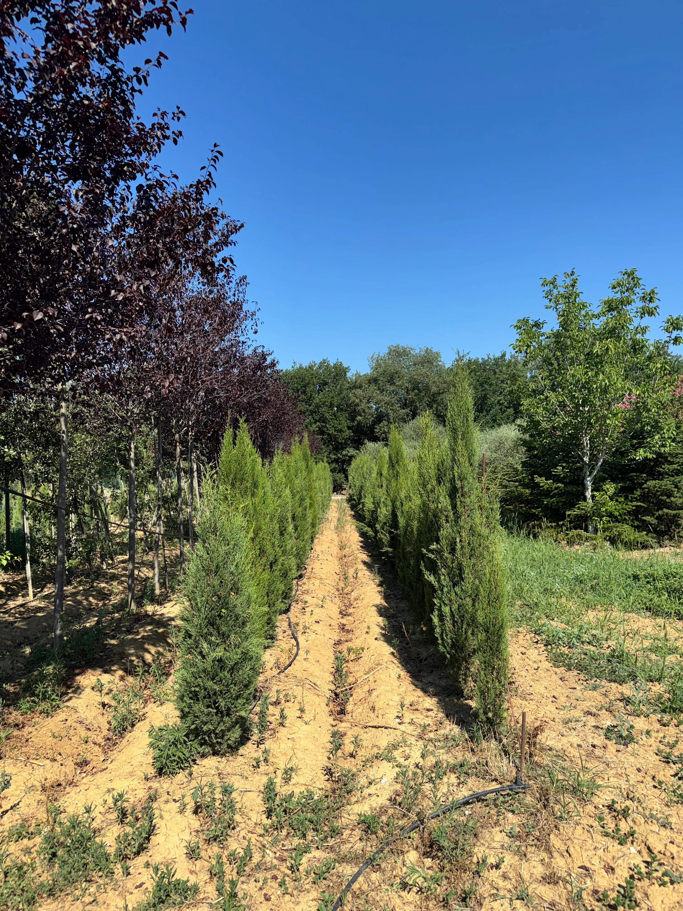
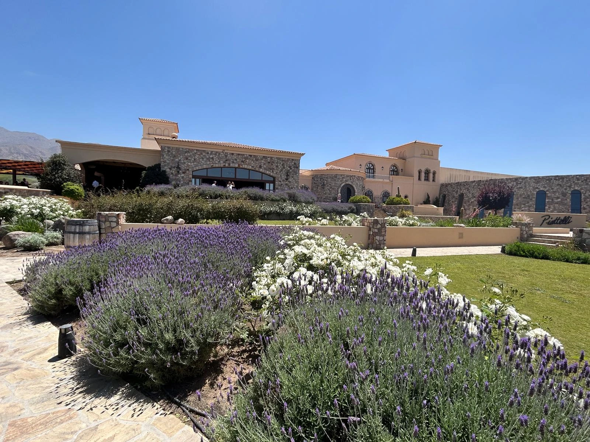
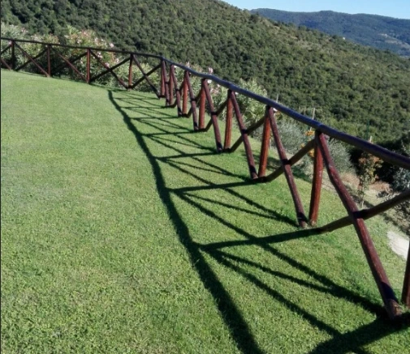
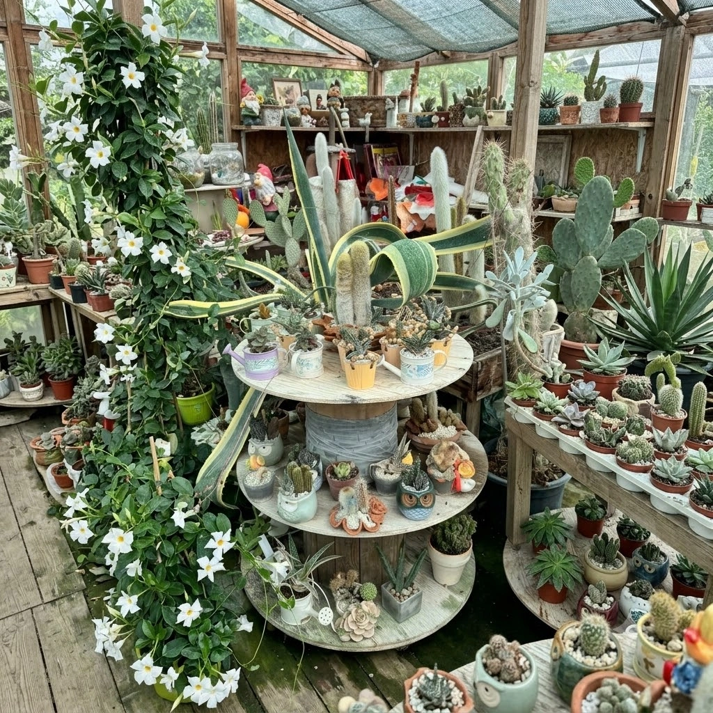
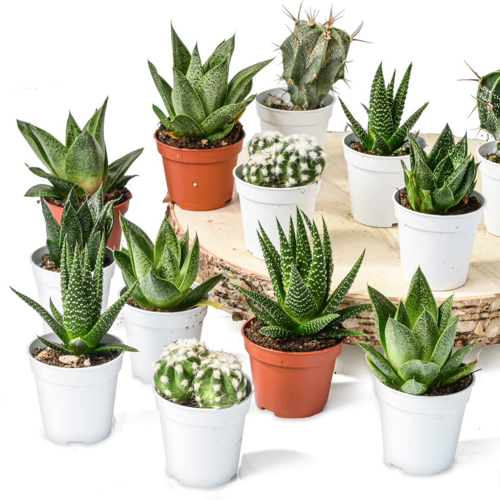

Galleria dei nostri prodotti e servizi







Carm Giardini , nasce a San Lorenzo di Cortona con un obiettivo chiaro: trasformare la passione per la natura in un servizio professionale la cura del paesaggio tra Toscana e Umbria.
Non siamo solo un vivaio con un'ampia selezione di piante e fiori, ma un partner di fiducia per la progettazione e la realizzazione di spazi verdi su misura. Dalla messa in posa di manti erbosi all'installazione di impianti di irrigazione efficienti.
La nostra storia è fatta di lavoro quotidiano, affidabilità e cura del dettaglio, per far crescere e valorizzare ogni vostro spazio verde.




